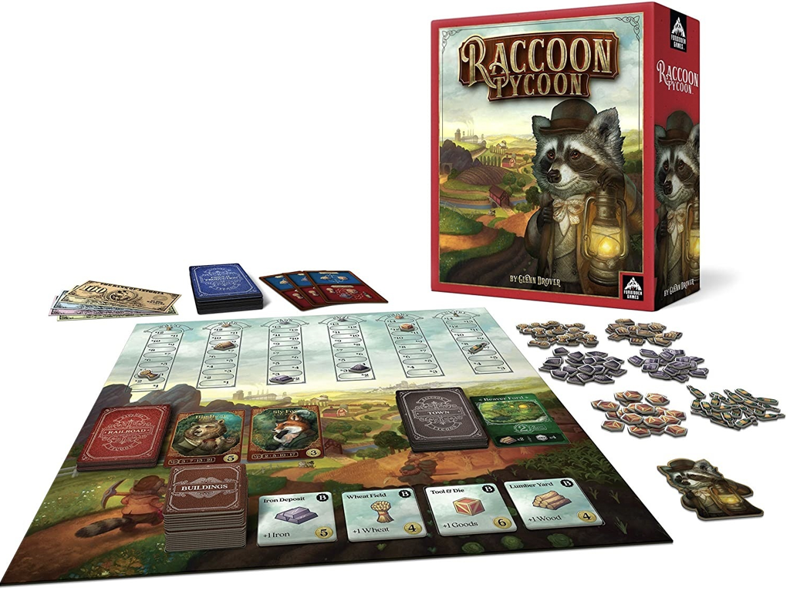
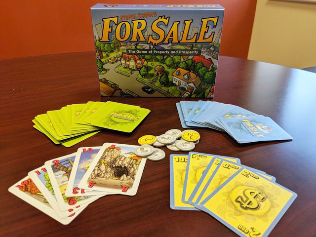
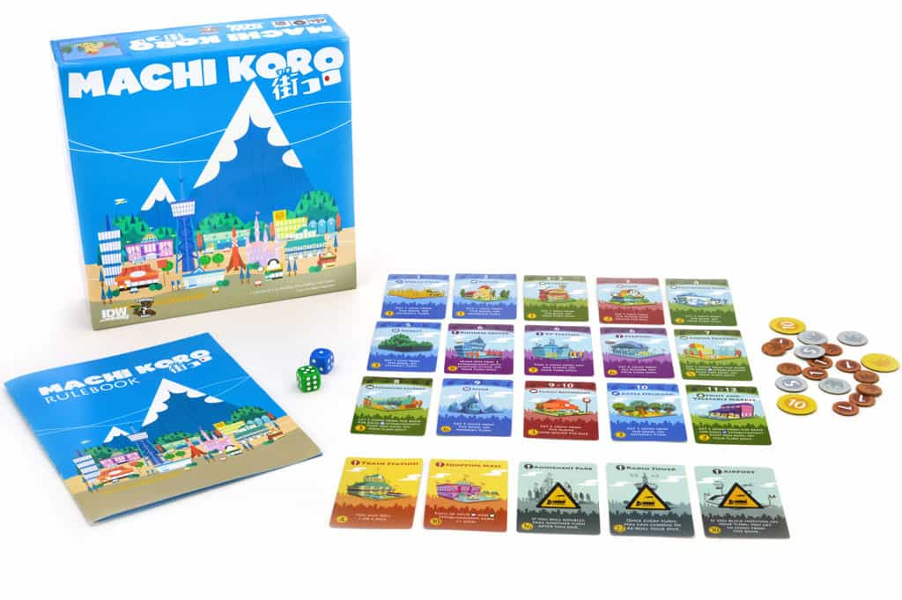
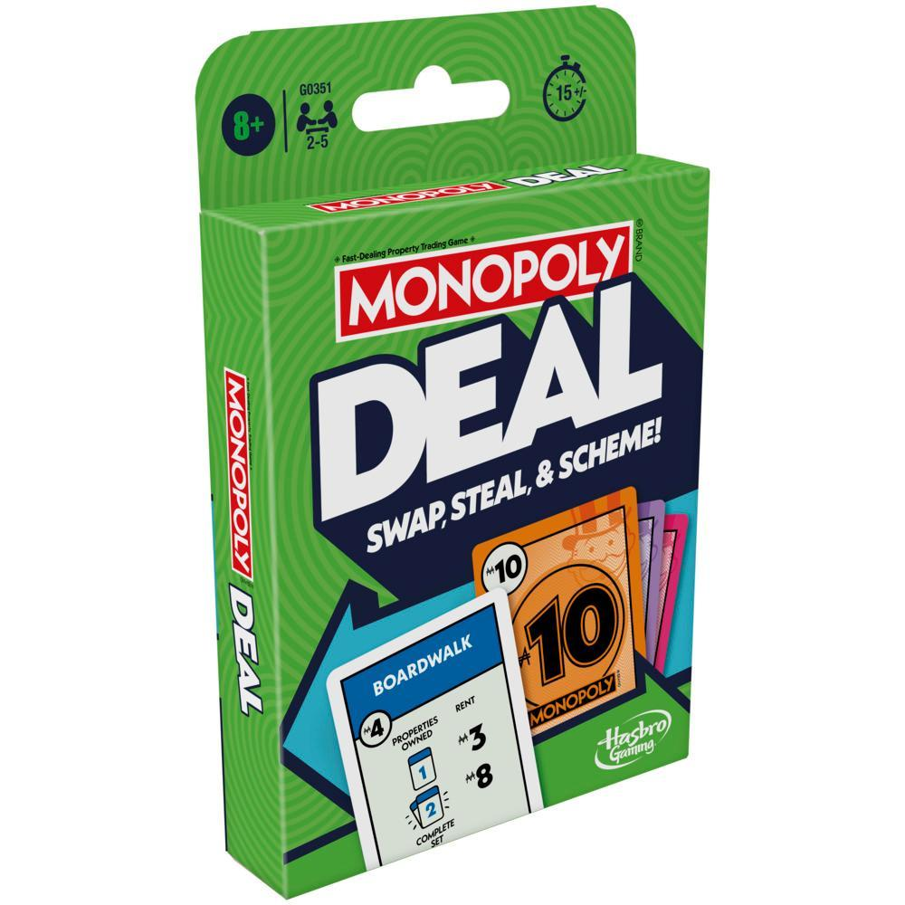

Monopoly
Buy and sell things! (and not take 5 hours to do so)
Racoon Tycoon

Best in show! Owning the best towns and railroads determines victory. There can be only one "top dog" in Astoria. Is it you?
Astoria is a land bustling with productivity and growth! New towns, factories, and railroads are springing up across the land. A few savvy business tycoons (you and your opponents) are determined to make your fortunes on the crest of this wave. These tycoons start out as the producers of the key commodities: wheat to feed the growing towns and factories, wood and iron to build them, coal to fuel the trains and factories, and manufactured goods and luxuries to fill the insatiable demand of the animals of Astoria.
In Raccoon Tycoon, players try to produce the most valuable commodities in an ever-changing marketplace. They then use those commodities to build towns, or sell them at the best price to secure great profits that can be used to win auctions for the all-important railroads. The profits may also be used to buy powerful buildings that give the players power-ups or bonuses in production.
For Sale

For Sale is a quick, fun game nominally about buying and selling real estate. During the game's two distinct phases, players first bid for several buildings then, after all buildings have been bought, sell the buildings for the greatest profit possible.
Machi Koro

Welcome to the city of Machi Koro. You've just been elected Mayor. Congrats! Unfortunately the citizens have some pretty big demands: jobs, a theme park, a couple of cheese factories and maybe even a radio tower. A tough proposition since the city currently consists of a wheat field, a bakery and a single die.
Machi Koro is a fast-paced game for 2-4 players. Each player wants to develop the city on their own terms in order to complete all of the landmarks under construction faster than their rivals. On their turn, each player rolls one or two dice. If the sum of the dice rolled matches the number of a building that a player owns, they get the effect of that building; in some cases opponents will also benefit from your dice (just as you can benefit from theirs). Then, with money in hand a player can build a landmark or a new building, ideally adding to the wealth of their city on future turns. The first player to construct all of their landmarks wins!
Monopoly Deal

The classic as a card game! Plays quick and what else is there to say?